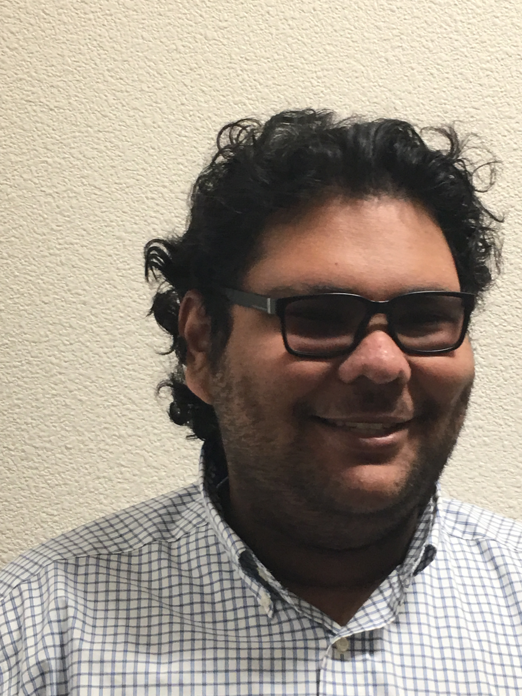
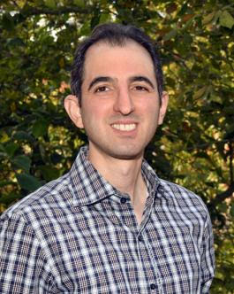

| President | Elijah Branner | I am Elijah Branner founder and president of SJDC robotics club, I am in my first year of college and have already made a huge impact with the robotics club. I have managed to get plenty of students more active in the STEM field by providing them with projects so they can strengthen their skills. Despite my lack of experience due to age I am a strong leader with a creative mind who is always looking to improve myself and others. | |
| Vice President | Javier Alonso | My name is Javier and I'm currently the VP of the robotics club. I've always held high interest in artificial intelligence and robotics so joining and being a part of this club was a no-brainer. I am also a CS major who loves the coding aspect of the discipline. My goal is to ultimately transfer to SJSU, where I will continue my career goals. In the meantime, I plan to make an impact in this club by being the VP and working with the president and other officers. | |
| Treasurer | Jose Alanis | My name is Jose Alanis. I am the treasurer of the robotics club. Majoring in math and physics and I have a huge interest in astronomy and dimension space. | |
| Secretary | Santiago Montanez |  | Hello I am Santiago I am a CS major and I am founder of the Computer Science Club. On my free time I love to experiment with web developement and programing in general. |
| Advisor | Professor Kamran Sedighi |  | Discipline:Electronics |